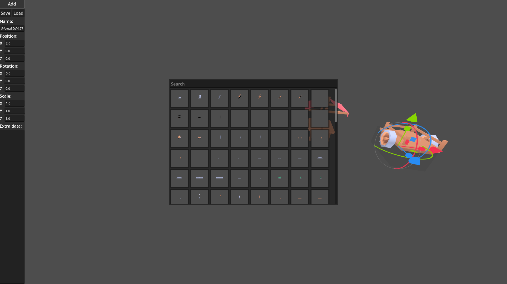
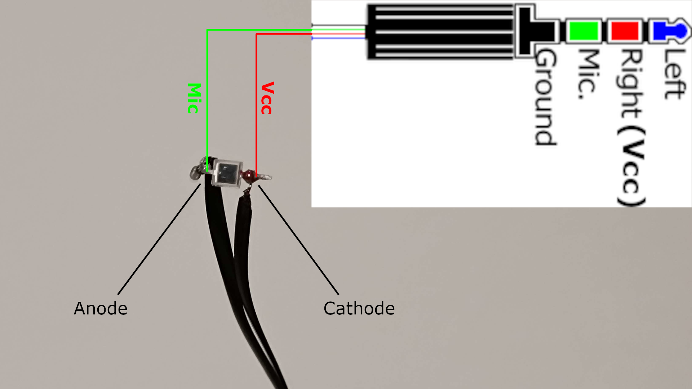

A general-purpose cross-platform 3D map editor
A general-purpose cross-platform proximity voice chat IPC daemon
An installer, launcher, server launcher, and modifier collection for an old Source game (Hidden: Source)
A fullscreen-only minimalistic X11 window manager
A rollback netcode library implemented as an IPC daemon
A budget-oriented solution for measuring end-to-end system latency
...and many more on my GitHub profile